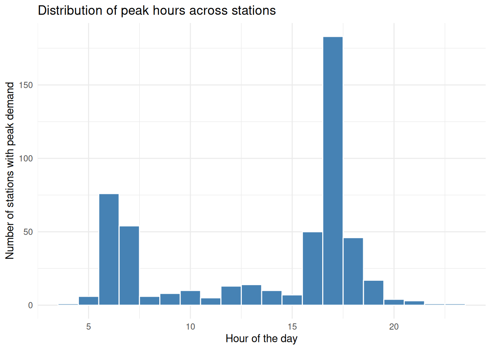

Here you can find some datasets that you can explore to investigate the questions above. We will use public transport tap-in data. Code for downloading samples of the other datasets is provided in each section.
1.1 Public transport tap-in data: Bogotá
Open public transport ridership data can be difficult to access. Fortunately, some cities which have systems managed by a public organisation make this data available for the public. Bogotá’s integrated transport system publishes the tap-in data for the BRT system (see this).
We will start by extracting the location of the BRT stations. Many public datasets are published using ArcGIS REST services. We can use the arcpullr package to easily obtain the data from the service.
The num_est variable contains the station code, which we will use to join this data with the tap-in data later on.
Let’s quickly visualise the location of the stations. As we imported the data as an sf object, we can easily visualise it using tmap or any other visualization package you like e.g.ggplot2.
We will use 2024 hourly boarding data for the BRT system. The following code will download the data and load it into R. We will use this data to explore the demand patterns in the BRT system and visualise the demand at the station level. This data can be manually obtained in the open data portal of TransMilenio here
The Estacion_Parada variable contains the station code and name. We will extract the station code to be able to join this data with the spatial data of the stations. The validaciones variable contains the number of tap-ins for each station and hour.
Let’s start by selecting the relevant columns and renaming the selected variables with the translation to make it easier to understand. We will also extract the station code from the Estacion_Parada variable.
The station_code variable contains both the station code and name. We will extract the station code to be able to join this data with the spatial data of the stations.
Code
tm_brt_2024_en$station_code <- tm_brt_2024_en$stop_name |>str_extract("\\(\\d*\\)") |># This extracts the number within parenthesesstr_remove_all("(\\(|\\))") # this removes the parentheses
We can identify the stations with highest demand by calculating the mean number of tap-ins for each station and then visualising the results on a map. We will use the daily_tapins variable to store the mean number of tap-ins for each station.
From this summary we can identify the stations with the highest demand. However, if you are not familiar with the codes, these results are not very informative. We can now join this data with the spatial data of the stations to visualise the demand at the station level. We will use a proportional symbol map to visualise the average number of tap-ins for each station.
Question: Can we identify where people move from and to with this dataset?
Hint: We only have tap-in data.
We calculated the mean number of people entering the system at each station. We can extract more information if we explore the temporal patterns of the tap-ins.
Do you think all days have the same demand pattern? Can we identify the days with the highest demand? Can we identify the hours with the highest demand? Let’s extract the day of the week from the date variable to explore the demand patterns by day of the week.
There is an apparent weekly(?) pattern in the demand. We can inspect this pattern by summarising the total number of tap-ins by day of the week.
Code
total_daily_tapins |># summarise(avg_tapins = mean(total_tapins,na.rm = T),# .by = wday) |>ggplot(aes(x = wday,y = total_tapins))+geom_boxplot()+theme_minimal() +scale_y_continuous(labels = scales::comma) +labs(x ="Day of the week",y ="Total tap-ins",title ="Daily tap-ins by day of the week")
The demand seems consistently higher on weekdays than on weekends. We can also explore the demand patterns by hour of the day to identify the peak hours. Let’s classify weekdays and weekends to explore the demand patterns by hour of the day.
Similarly to the previous visualisation, we can visualise the total number of tap-ins for each hour of the day by type of day (weekday vs weekend).
Code
total_hourly_tapins |>ggplot(aes(x = hour,y = total_tapins,group = date))+geom_line(alpha =0.1,col ="steelblue")+stat_summary(aes(group = dtype),fun ="median",geom ="line", col ="goldenrod",linewidth =1)+facet_wrap(~dtype)+theme_minimal() +labs(x ="Hour of the day", y ="Total tap-ins", title ="Hourly demand profile")
Questions: Can you recognise the highest demand hours? Do they differ between weekdays and weekends? Why do we see some weekdays with a similar demand pattern to a Sunday?
We have been exploring the demand across the whole system. We can also explore how these daily profiles are consistent across stations. Do all stations have the same demand pattern? Are there some stations with a different demand pattern? Can we identify the stations with the most consistent demand patterns?
Let’s try to answer these questions. First, we will subset data for a typical weekday, let’s take Wednesdays. Then, we will calculate the typical (median) hourly demand for each station, and extract the hour with the highest demand.
Let’s check the distribution of the hours with the highest demand across stations.
Code
hours_max_tapins |>ggplot(aes(x = hour))+geom_histogram(binwidth =1, fill ="steelblue", color ="white")+theme_minimal() +labs(x ="Hour of the day",y ="Number of stations with peak demand",title ="Distribution of peak hours across stations")

This evidences that there are two main groups of stations: those with a peak demand in the morning (7-9am) and those with a peak demand in the late afternoon. We can visualise the spatial distribution of these two groups of stations by joining this data with the spatial data of the stations and visualising it on a map.
TfL’s crowding data is also a great source of ridership data. See this.
1.2 Motorised vehicles counts: Leeds
Many cities/countries publish data from permanent traffic counters e.g. ANPR cameras, induction loops or low-cost sensors. We are going to use data from the sensors in Leeds (available in Data Mill North)
Important
The following examples utilize external APIs and are set to not evaluate by default. You can run them locally to explore these datasets.
Code
# the location of the camerasleeds_car_location <-read_csv("https://datamillnorth.org/download/e6q0n/9bc51361-d98e-47d3-9963-aeeca3fa0afc/Camera%20Locations.csv" ) # Creating an sf object from the location dataleeds_car_location_sf <- leeds_car_location |>st_as_sf(coords =c("X","Y"),crs =27700)tm_basemap("OpenStreetMap")+tm_shape(leeds_car_location_sf)+tm_dots("blue")# The count dataleeds_car_2019 <-read_csv("https://datamillnorth.org/download/e6q0n/9e62c1e5-8ba5-4369-9d81-a46c4e23b9fb/Data%202019.csv" )# a preliminary exploration of the dataleeds_car_2019 |>group_by(Cosit) |>summarise(mean(Volume))mean_daily_volumes <- leeds_car_2019 |># converting cosit to numericmutate(Cosit =as.numeric(Cosit)) |># extracting the datemutate(time_date =dmy_hm(Sdate),# extracts the daydate =date(time_date)) |># calculating the total flows for each daysummarise(Volume =sum(Volume,na.rm = T),.by =c(date,Cosit)) |># Calculating the daily mean summarise(daily_volume =mean(Volume,na.rm = T),.by = Cosit) daily_volumes <- leeds_car_2019 |># converting cosit to numericmutate(Cosit =as.numeric(Cosit)) |># extracting the datemutate(time_date =dmy_hm(Sdate),# extracts the daydate =date(time_date)) |># calculating the total flows for each daysummarise(mean_volume =sum(Volume,na.rm = T),.by =c(date,Cosit))daily_volumes |>mutate(Cosit =as.numeric(Cosit)) |>filter(Cosit ==90201)|>ggplot(aes(x = date,y = mean_volume))+geom_line()mean_daily_volumes |>ggplot(aes(daily_volume))+geom_histogram()leeds_car_location_sf |>left_join(mean_daily_volumes,by =c("Site ID"="Cosit")) |>tm_shape()+tm_dots("daily_volume",size ="daily_volume")
If you are interested in open traffic count datasets see this
1.3 Cycle counts for West Yorkshire
Some cities would have some dedicated infrastructure to count the number of people using bikes at strategic points of the city. We are going to use some cycle counters from West Yorkshire that you can find here:
Code
leeds_bike_location <-read_csv("https://datamillnorth.org/download/e1dmk/a8c8a11e-1616-4915-a897-9ca5ab4e03b8/Cycle%20Counter%20Locations.csv",skip =1 ) leeds_bike_location_sf <- leeds_bike_location |>drop_na(Latitude,Longitude) |>st_as_sf(coords =c("Longitude","Latitude"),crs =4326) |>st_transform(27700)tm_basemap("OpenStreetMap")+tm_shape(leeds_bike_location_sf)+tm_dots("darkblue")### The data for 2019leeds_bike_2019 <-read_csv("https://datamillnorth.org/download/e1dmk/f13f5d49-6128-4619-a3ff-e6e12f88a71f/Cycle%20Data%202019.csv" )
Cities also monitor the number of pedestrians in key locations. We can use data from the sensors in Melbourne accessible here:
Code
# locations of the sensorsmelbourne_locations_sf <-st_read("https://data.melbourne.vic.gov.au/api/explore/v2.1/catalog/datasets/pedestrian-counting-system-sensor-locations/exports/geojson?lang=en&timezone=Europe%2FLondon")# a quick map to visualise the location of the sensorstm_basemap("OpenStreetMap")+tm_shape(melbourne_locations_sf)+tm_dots("darkblue")# Reading data for december 2024melbourne_dec2024 <-read_csv("https://data.melbourne.vic.gov.au/api/explore/v2.1/catalog/datasets/pedestrian-counting-system-monthly-counts-per-hour/exports/csv?lang=en&refine=sensing_date%3A%222024%2F12%22&timezone=Australia%2FMelbourne&use_labels=true&delimiter=%2C")
1.5 Network data from OSM
You may be already familiar with getting and using OSM data. This is an example of how to obtain the network that can be used for pedestrians.